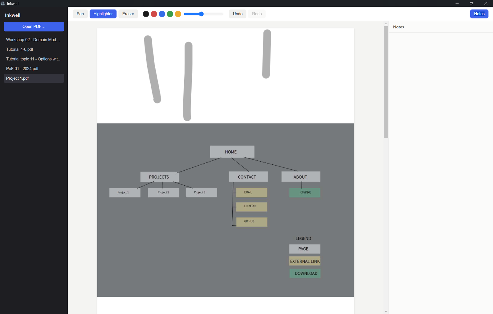

Inkwell
Project 5
A cross-platform desktop application for PDF annotation and note-taking, designed as a free alternative to paid tools like Adobe Acrobat.
Built with Electron, React and TypeScript, Inkwell supports stylus and mouse-based annotation tools rendered via HTML Canvas. Annotations are stored locally in SQLite for offline-first usage, with the Electron main process and React renderer communicating via IPC for file system access and PDF rendering through PDF.js.
🔗 Github repository